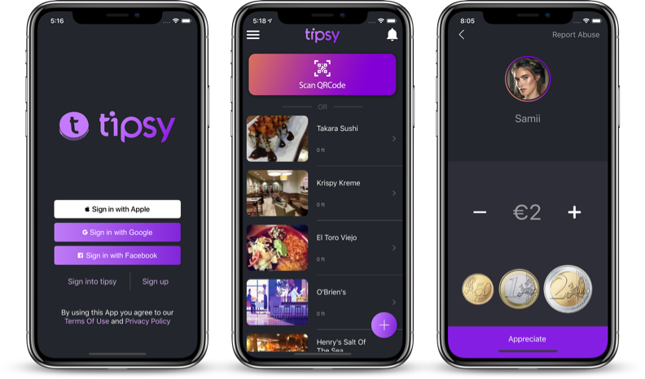
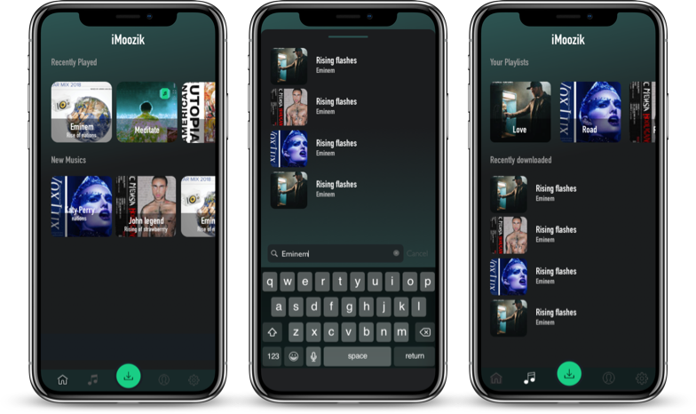
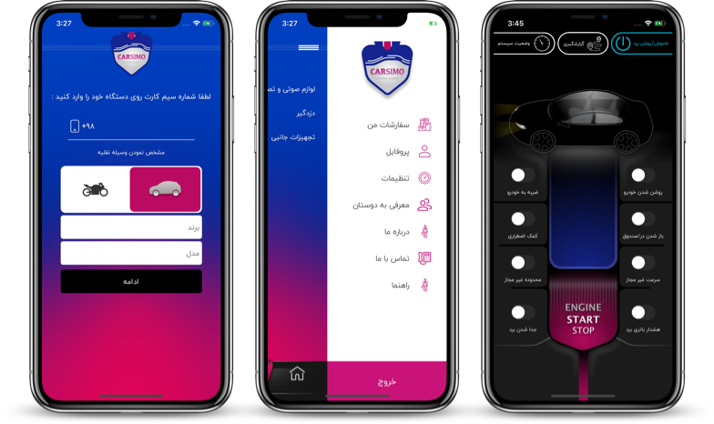
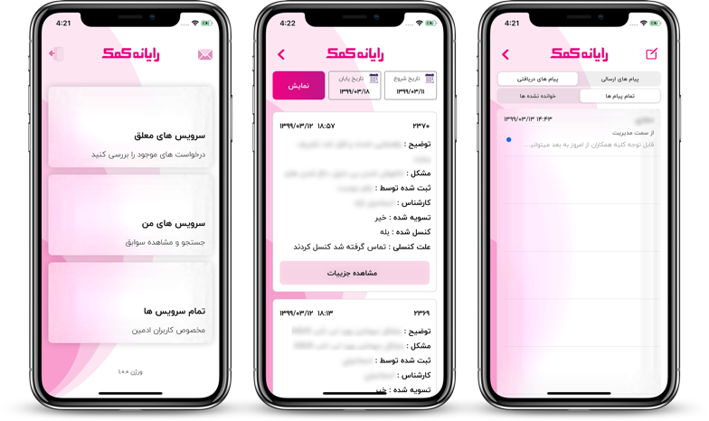
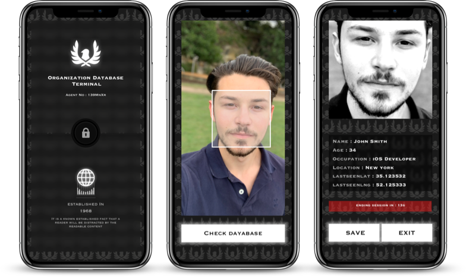
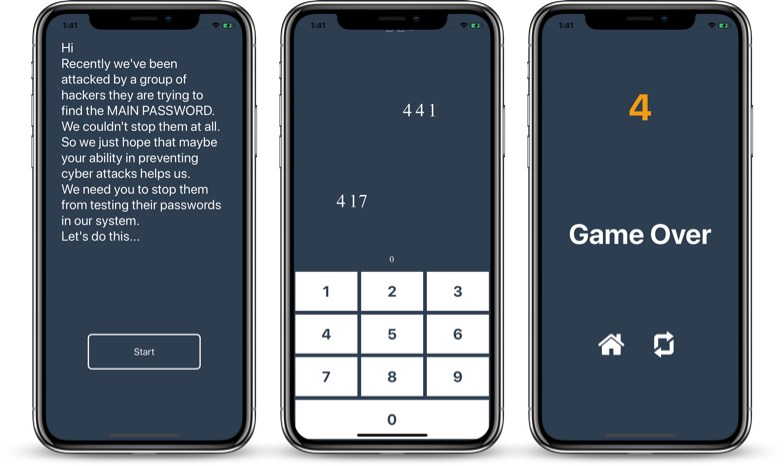
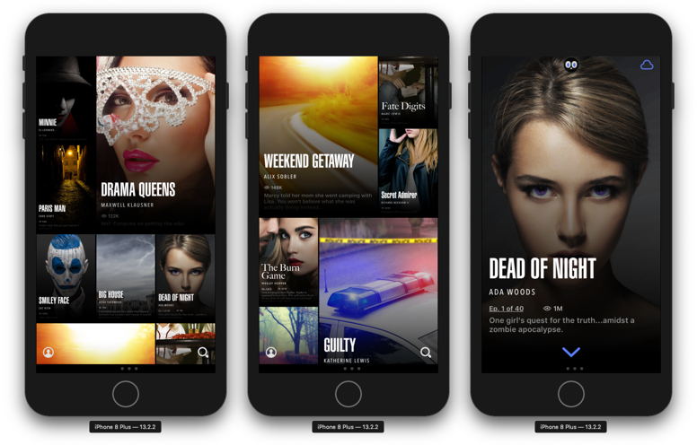

Welcome to my Portfolio
Hi, my name is Sasan Angel. A self-taught iOS Engineer & UI/UX Engineer, I started four years ago & I love to learn anything that can make me a better engineer.
I am a passionate learner, It is my favorite way of having fun. In my free time, I am learning about AI, Dapps & my beloved field of making mobile games with unity.
When I'm not working I often love to play guitar, play video games, or travel.
I talked a little more technical at bottom of this page.
Tipsy
We invented Tipsy ™ to reduce the number of heavy coins carrying every day. Tipsy ™ is a platform that handles Micro-Payments by credit cards.
Next time you can tip a waiter with tipsy, directly from your credit card. Street sellers, musicians, performers, and anyone can use Tipsy as a new income channel and let their audience to pay with credit cards.
In this app I used crisp to provide live support, Fabric Crashlytics to analyze our user's behavior and our app bugs, PayCardsRecognizer to scan credit cards, Google & Facebook & Apple Sign In, etc.
Check it out on app store

iMoozik
This is iMoozik. with this application, you can search and download any song on the internet into your iOS Device. You can also make playlists for yourself.
I made it for educational purposes only.
UI/UX Designed by me.

SMS Police
This is SMS Police. This app separates the spam SMS messages and puts it in a different folder on your iOS device's official messages app.
By default, applications don’t have access to messages that’s why I used the “ Message Filter Extension ” that Apple provided to developers that enables them to make some rules that decide if a message is a spam or not.
I used machine learning in this app so the ml model will get better in deciding which message is spam.
UI/UX Designed by me.

Rahyab
I developed this app for a startup in IoT field. with this app, you can control your car with your mobile.
You can control almost everything in you for example you can turn off and lock down your car if a thief tries to steal your car, you can even listen to your car’s cabin voices if you want to or so many more cool stuff.

RK
This is an app developed for just the staff of a company. They can see available services and choose anyone that they can do.
It also has an internal messaging system so users can send messages to each other.
UI/UX Designed by me.

XDatabase
In this app, I put another passion of mine into app development and that is “Magic tricks”. I made some magical code that somehow “I won’t tell ya :D” it can give you the information when you get a picture from your friend’s face.
All your friends will think that you are a special secret agent and you should never tell them how this app works.
But I know you will, LOL.
UI/UX Designed by me.

Color Wheel
I have a huge interest in making games with unity but in this project, I wanted to see if I can make a game with just pure swift.
I have some experience with spriteKit for 2d games and sceneKit for 3d games but in this game, I didn't use them and made everything with default iOS methods.
UI/UX Designed by me.

Numbomb
This is another game that I developed with pure swift and in this game, numbers will fall from the top of the screen and before they reach the keypad you should type those numbers.
Game speed will increase over time and also the numbers will get bigger.
UI/UX Designed by me.

Chooked
In this project, I just wanted to implement custom flow layout in UICollectionView & all sorts of animations.
It was inspired by the famous app named “Hooked”.
for educational purposes only.

Tech Talk
I can make beautiful interactive UI & Animations and I like to give the user a great experience exploring the apps that I’ve built.
I also prefer making UI Components all by code because I find it more comfortable for me But I can make any sort of UI Using Storyboards too. (I didn’t start to implement SwiftUI Yet because there are a large percentage of people who didn’t update their OS to iOS 13)
The libraries that I often use are: Alamofire, Snapkit, Fabric Crashlytics, Google Sign in, Facebook Sign in, Apple Sign in, etc. I also have some experience with apple built-in frameworks such as SpriteKit, SceneKit, MessageFilterExtensions.
I worked with other languages and softwares like Unity(C#), Unreal Engine, Blender, React JS for making web apps, MongoDB, SQL, etc. But I’m not an expert in any of them.
I would love to research, learn, and implement any new feature into my applications fast and convenient.
Get In Touch
I would love to hear about your app idea.
Contact Me